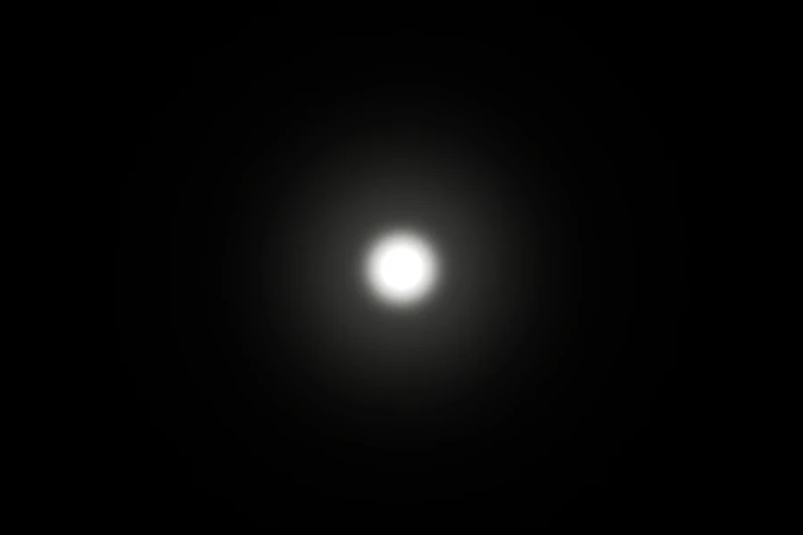
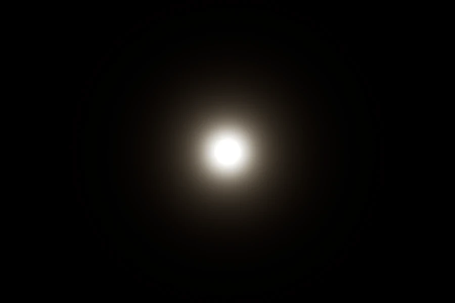

Effects
Bloom
Bloom is the soft glow around bright things. Camera lenses and our eyes both scatter a bit of light from anything bright, so a street lamp never has a perfectly sharp edge, it glows. That glow is a big part of why a scene feels bright and not flat.
HLSLens replaces Unreal's built-in bloom. It works on the final image, so there's nothing to set up on your lights. Lights, emissive materials, the sky, a shiny reflection, anything bright enough will glow.
- Where to find it
- Bloom & Lens Flares → Bloom, and Bloom & Lens Flares → Threshold
- Cost
- Standard is cheap. Cinematic does about twice the work, and a higher Blur Pass Amount costs more too.
How bloom works
You never have to touch these steps, but knowing them makes the settings easier to understand.
01Isolate Pick out the bright parts of the image. Only happens if a threshold is on.
02Shrink Make smaller, blurrier copies of the image, each about twice as blurry as the last.
03Weight Decide how much each copy counts. Falloff controls this.
04Merge Stack the copies back together into one smooth glow.
A bright light keeps all of its energy through these steps, so even a small lamp gets a big soft halo without cranking up Intensity.
The engine's bloom uses a fixed set of blur steps, and in some scenes you can see rings in the glow where they meet. HLSLens blends the steps into one smooth curve so the glow fades out without those rings. The comparison further down shows the difference.
Standard and Cinematic
The look stays about the same in both modes. Cinematic uses twice as many blur steps, so the glow is a little smoother, and it unlocks three extra settings.
| Standard | Cinematic | |
|---|---|---|
| Smoothness | Smooth | Smoother, no faint steps in the glow |
| Extra settings | — | Haze Ignores Threshold, Halo Brightness Boost, Spectral Spread |
| Cost | Low | About twice Standard |
Threshold
The threshold decides how bright a pixel has to be before it glows. Anything darker than the Threshold Level is ignored, and the Knee softens the cut-off so things don't pop on and off.
Bloom and lens flares share this section, and Threshold Mode chooses which of them gets a threshold:
| Threshold Mode | What happens |
|---|---|
| Disabled | No threshold at all. Every pixel adds a little to both bloom and lens flares. |
| Shared (Bloom + Lens Flare) | Both use the same threshold values. This is the one to pick when you use both effects, because it only builds one set of blurred images instead of two. |
| Bloom Only | The default. Only bloom has a threshold. Lens flares see the raw image, so even dim lights add to the flares. |
| Lens Flare Only | Only lens flares have a threshold. Bloom sees the raw image. |
Each mode shows its own Level and Knee in the Details panel (Shared, Bloom or Lens Flare).
| Setting | What it does | Default |
|---|---|---|
| Threshold Level | How bright a pixel must be before it counts. Lower values make more of the image glow. | Bloom 3.0, Shared and Lens Flare 1.0 |
| Threshold Knee | How soft the cut-off is. At 0 the glow switches on sharply at the threshold. |
0.5 |
Shaping the glow
Think of a street lamp. The core is the sharp bright part right around the bulb, the body is the medium glow where most of the bloom is, and the haze is the wide faint glow further out. Falloff and three sliders control the balance between them.
| Setting | What it does | Default | Range |
|---|---|---|---|
| Falloff | How fast the glow fades away from a light. Lower gives more wide haze, higher keeps it tight. It only moves light between tight and wide glow, the total brightness stays the same. | 2.4 | 1.5 to 4.0 |
| Core Intensity | Brightness of the sharp part right around a light. | 1.0 | 0 to 4 |
| Body Intensity | Brightness of the medium glow, where most of the visible bloom is. | 1.0 | 0 to 4 |
| Haze Intensity | Brightness of the widest, faintest glow. | 1.0 | 0 to 4 |
| Haze Size | How far the haze reaches. 0 is only the tight glow, 1 the full reach. |
1.0 | 0 to 1 |
Some starting points for Falloff:
| Falloff | Look |
|---|---|
| Around 2.0 | Hazy, dreamy, foggy lights |
| 2.4 to 2.8 | The default range |
| Above 3.5 | A tight glow, the haze almost disappears |
Falloff and the three intensities don't affect the overall Intensity. So you can change the character of the glow, say less haze and a stronger core, without having to rebalance the brightness afterwards.
Cinematic-only settings
These only appear when Bloom Quality is set to Cinematic.
| Setting | What it does | Default | Range |
|---|---|---|---|
| Haze Ignores Threshold | Normally the haze only comes from pixels above the threshold. Turn this up and the widest haze is made from the whole image instead, like the soft veil of light on a real lens. It also stops the glow from popping when something crosses the threshold. Does nothing without a threshold, and costs a bit more. | 0 | 0 to 1 |
| Halo Brightness Boost | Gives much brighter areas a bigger halo, so the sun gets a bigger one than a lamp. This one is artistic, not realistic. 0 is off. |
0 | 0 to 4 |
| Spectral Spread | Makes the red part of the glow reach a bit further than the blue part, like on a real lens. You get a subtle warm edge on the outer glow without changing the color of the scene. 0 is off. |
0.2 | 0 to 1 |
Strength, color and reach
| Setting | What it does | Default | Range |
|---|---|---|---|
| Intensity | How strong the bloom is overall. | 1.0 | 0 to 10 |
| Tint | Colors the bloom and also scales it. Darker values make it weaker and black hides it. | Dark grey | — |
| Blur Pass Amount | How far the bloom can spread across the screen. Each pass adds a wider layer of glow and costs some GPU time. | 8 | 1 to 10 |
| Dirt Mask | A texture that looks like dust and smudges on a lens. It shows up where the bloom is bright. | None | Texture |
| Dirt Mask Tint | Colors the dirt. | Grey | — |
| Dirt Mask Intensity | How visible the dirt is. 0 hides it. |
0 | 0 to 10 |
Looks you can create
A few ideas to start from. I'd still tune everything to your own scene, but these should point you in the right direction.
| Look | Where to start |
|---|---|
| Soft, filmic night | Falloff around 2.0 to 2.4 and plenty of Haze Intensity. Big soft halos around street lights. |
| Car headlights | Higher Falloff and Core Intensity for tight, bright cores. |
| Overexposed sunlight | Cinematic quality with Halo Brightness Boost raised, so very bright areas get a big glow. |
| Dreamy or horror | Falloff near 2.0, lots of Haze Intensity and full Haze Size. In Cinematic, try Haze Ignores Threshold too. |
| Clean and natural | Leave the defaults and only adjust Intensity. |
Compared with the engine's bloom
These images show the same bright light with the engine's bloom and with HLSLens. Zoom in to see the difference. Both blooms can be tuned a lot, so the exact result depends on the settings.
I used the engine's default bloom settings and only raised Bloom Intensity and Bloom Gaussian Intensity. For HLSLens I only raised Bloom Intensity.


Engine bloom HLSLens bloom
Engine bloom HLSLens bloom
Common questions
Do I need to add anything to my lights?
No. There are no textures or components to add, anything bright enough glows.
Why is nothing glowing?
Check that Intensity is above 0 and the Tint isn't black. Then look at the threshold: the default Bloom threshold is 3.0, which is quite high, so in a dim scene nothing may reach it. Lower the level or raise the exposure.
The screen is washed out in white.
Lower Intensity, raise the Threshold Level, darken the Tint, or raise Falloff to keep the glow tighter.
Does Falloff make the scene brighter or darker?
Not really. It moves light between the tight and the wide glow. Use Intensity for brightness.
How is bloom different from lens flares and halation?
Bloom is the soft glow around bright areas. Lens flares are the shapes a camera lens adds. Halation imitates film. They work well together.